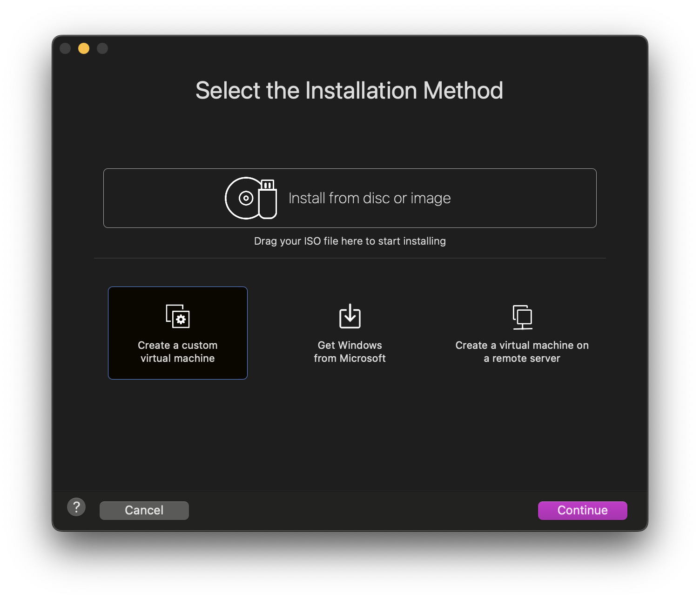
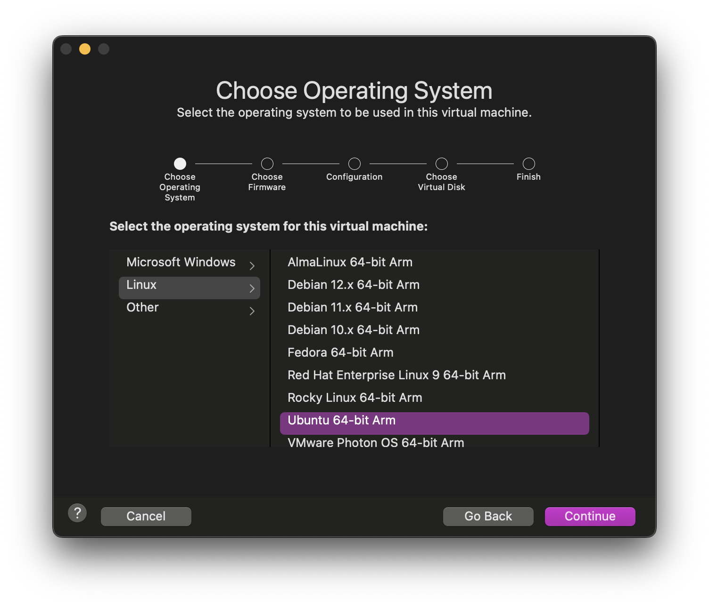
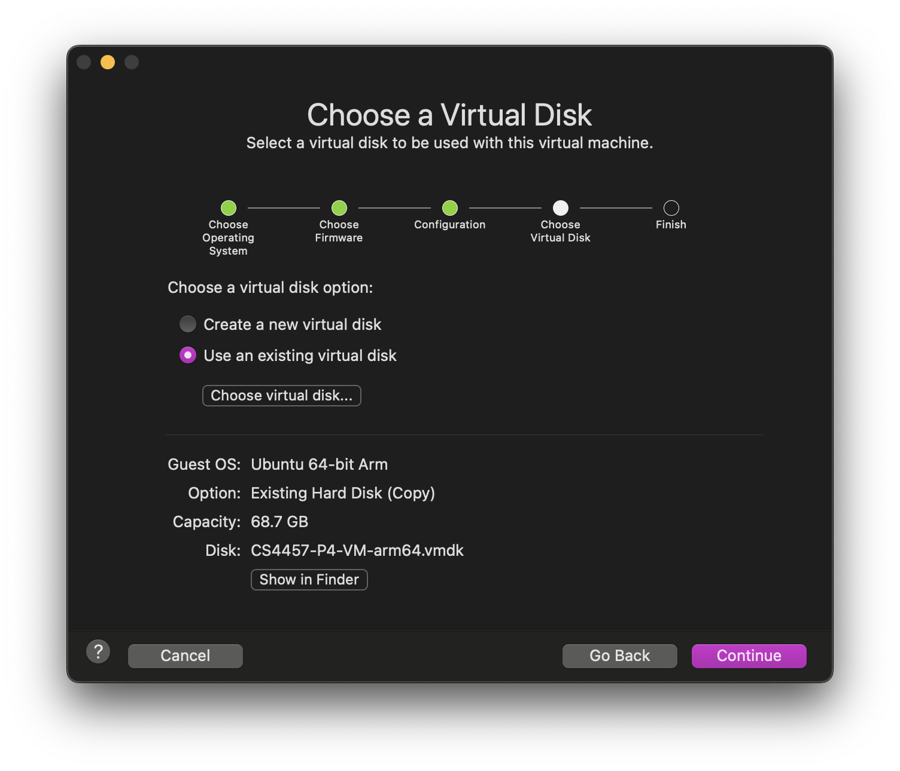
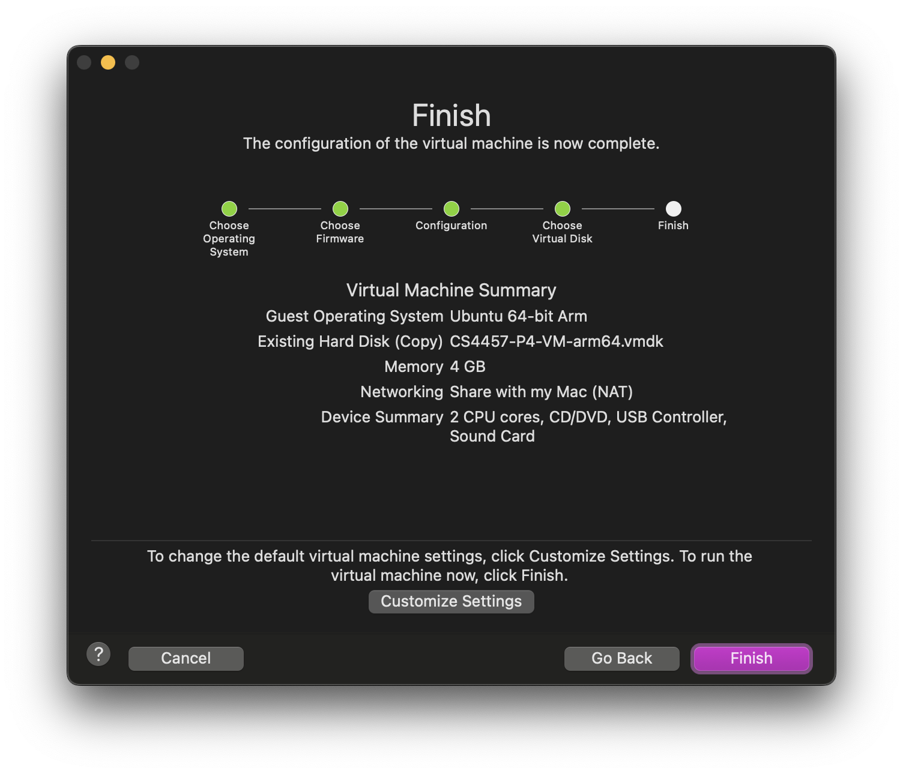

[added 4 Oct:] An addendum to the below:
There is an error (probably caused by some version differences
between utilities on the VM below), so after installation you might get
an Python error about ’no field named initial_default_action
. Per
the github
link on this Piazza
post, the fix is:
- in /home/p4/tutorials/utils/p4runtime_lib/helper.py file that is referred to by the stack trace (probably 29), add , allow_unknown_field=True to the google.protobuf.text_format.Merge call that is referred to by the stack trace.
The following is via one of your fellow students Tavis Palmer:
I was able to set up a P4 VM for arm64 (for use with Apple Silicon Macs). I tried to match it as close as possible to the x86_64 one provided, including the user accounts, .bashrc, and tutorials folder.
I couldn’t get VirtualBox working on my Mac (despite there supposedly being an arm64 version now…), so here is an image compatible with VMWare Fusion (which is free now for personal use):
https://virginia.box.com/s/ip4urguxpf6gja4htcsnzygsmu6pcqza
It’s very hard to find the installation link for VMWare Fusion through their website, so I would recommend to just install it with Homebrew, i.e.
brew install --cask vmware-fusionAlternatively, you can get the link directly from the Homebrew Cask: https://softwareupdate.vmware.com/cds/vmw-desktop/fusion/13.6.0/24238079/universal/core/com.vmware.fusion.zip.tar
Below is a short tutorial for anyone unfamiliar with using VMWare Fusion:
To set up the VM, you want to first click the +
in the top
left corner of the UI, and select New…
. From there, select
Create a custom virtual machine
:

On the next screen, select Ubuntu 64-bit Arm
:

On the next screen, select Use an existing virtual disk
, then
Choose virtual disk…
and select the .vmdk file downloaded from
the UVA Box link:

Default settings should be fine here, but as the original x86_64 VM image has 4 CPU cores with 8 GB of memory allocated, you could go and change that here:

If anyone runs into any issues, please let me know and I will see what I can do. Hope this helps!
— Tavis Palmer